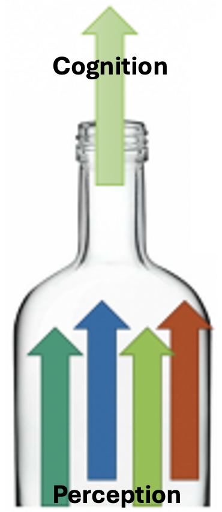
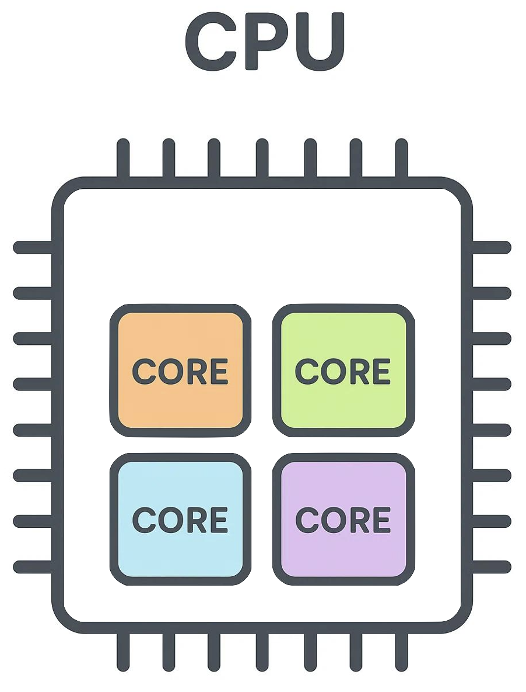
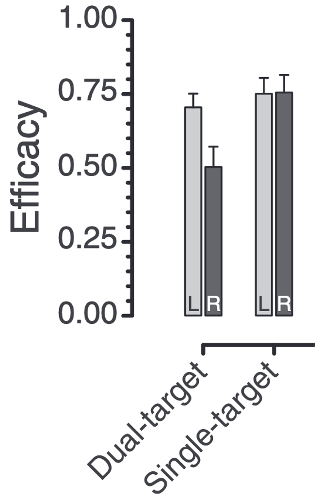
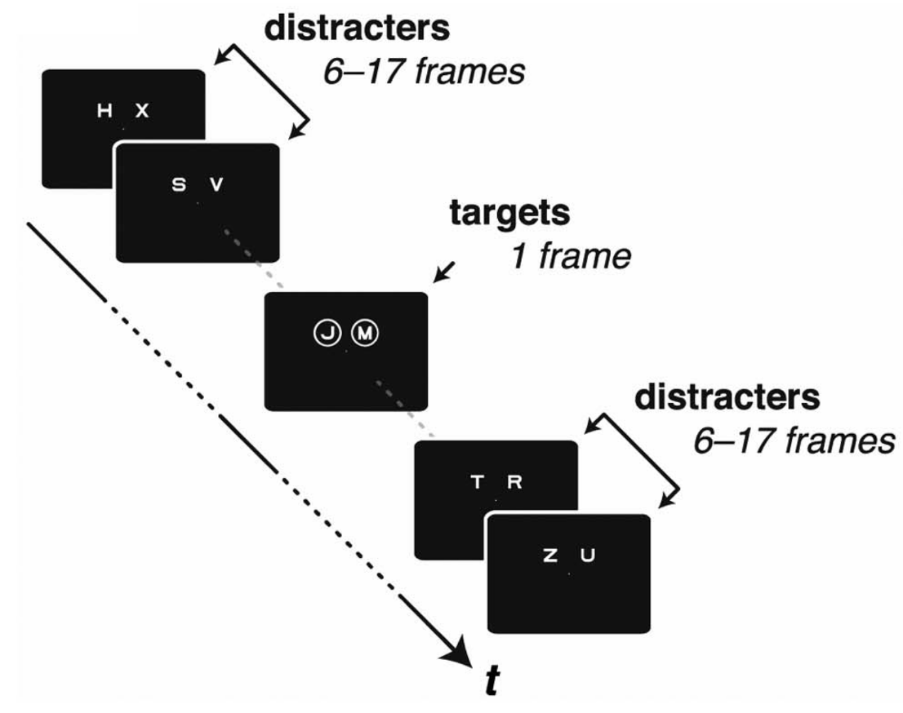
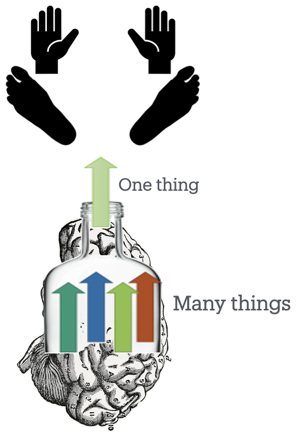
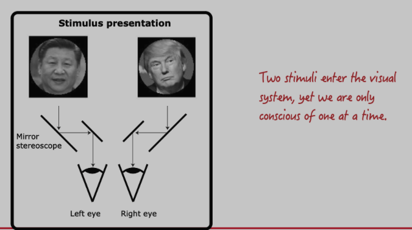
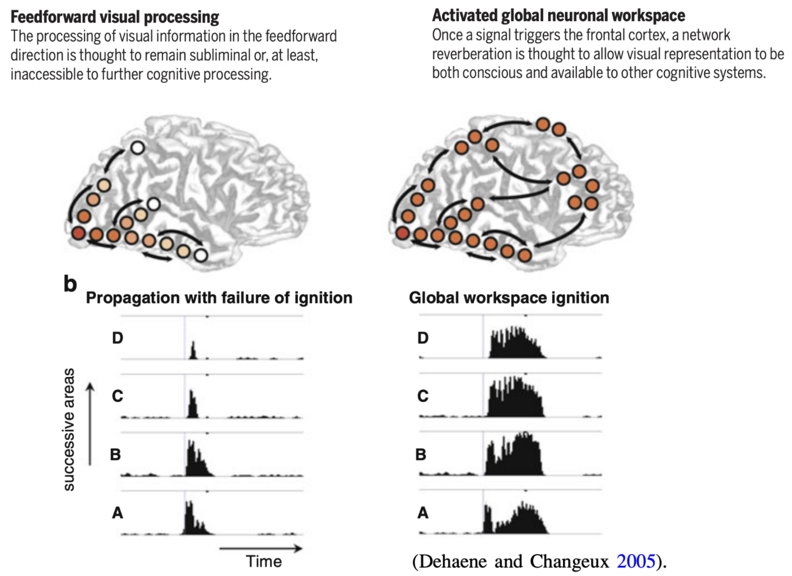
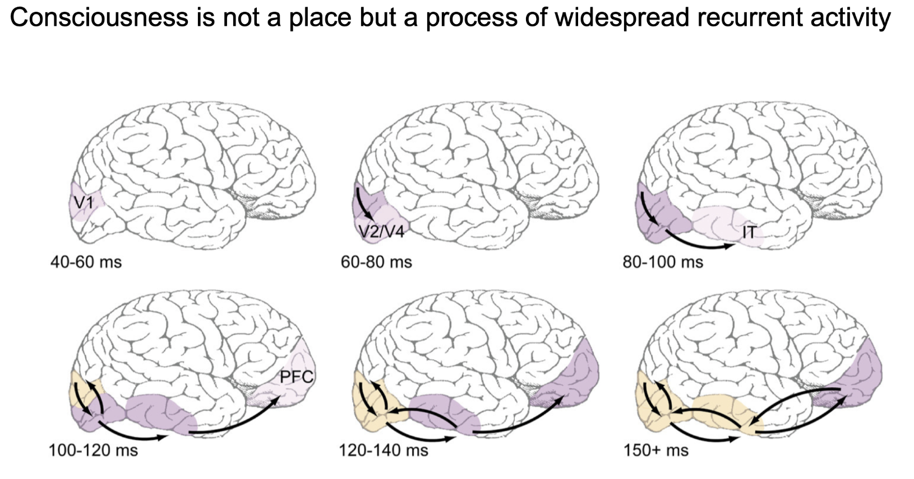
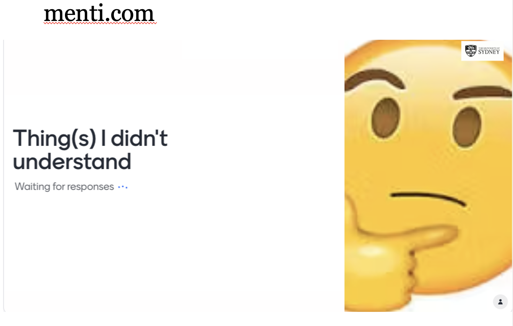

2026-09-01
PDF of this lecture.
All day, the world makes its demands.
There’s so much of it, world
begging to be noticed.
All day, the world makes its demands.
There’s so much of it, world
begging to be noticed.
- Leila Chatti
“Everyone knows what attention is.
It is the taking possession by the mind,
in a clear and vivid form one out of several simultaneously possible objects or trains of thought.
Focalization, concentration of consciousness are of its essence.
It implies withdrawal from some things in order to deal with others.”
- — William James (1890)
https://psyc2016.whatanimalssee.com/index.html
Can the lecture be downloaded as PDF?
Yes.
->Tools->PDF Export
or press the letter ‘e’
What’s the point of the lectures if everything is in the textbook?
Lectures:
I can’t see everything on some textbook/lecture pages
Some things are offscreen on most phones, but will work on a laptop, desktop, or tablet
Understand how unscientific ways of talking about attention relate to scientific concepts (Ch.1,3)
“It implies withdrawal from some things in order to deal with others”
Understand how unscientific ways of talking about attention relate to scientific concepts (Ch.1,3)
Differentiate physical limits from central bottlenecks (Ch.3)
“I can’t be everywhere at once”
Understand how unscientific ways of talking about attention relate to scientific concepts. (Ch.1,3)
Differentiate physical limits from central bottlenecks (Ch.3)
I can’t be everywhere at once
I can’t do everything at once
Differentiate physical limits from central bottlenecks (Ch.3)
Limits imposed by our body
Can only be in one place at a time
Can act on only a few things at a time
Can look directly at only one thing at a time
Selection required
Can only extensively mentally process simultaneously a limited number of things
“It implies withdrawal from some things in order to deal with others.”

Differentiate physical limits from central bottlenecks (Ch.3)

Modern computers and phones have multiple core processors.
Distractions would be less of a problem if we could devote one-quarter of our mind to the distracting stimulus, while the rest of us stayed on task.
Understand how unscientific ways of talking about attention relate to scientific concepts (Ch.1,3)
Distinguish overt from covert attention (Ch.4)
Processing capacity: How many things can be processed at once.

Goodbourn PT, & Holcombe AO (2015)

Differentiate physical limits from mental bottlenecks (Ch.3)
Limited resources; a bottleneck

Go to Menti.com
You said the two letters are processed simultaneously, but other lecturer said the faces of Trump and Jinping alternate



